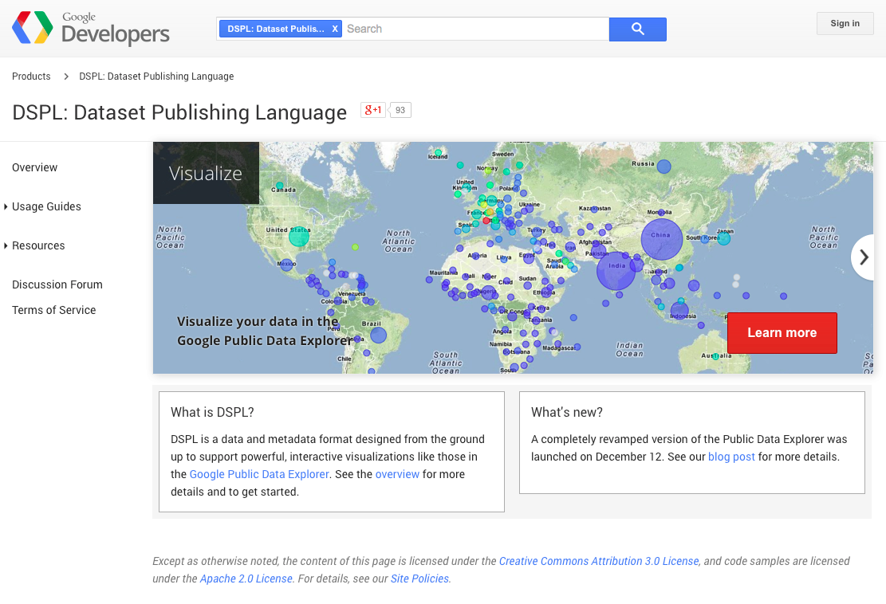
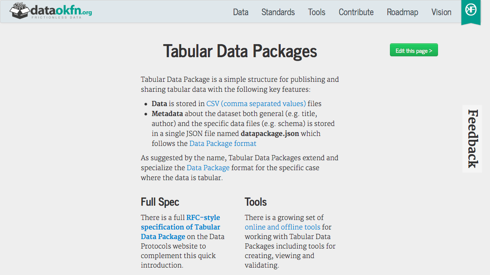
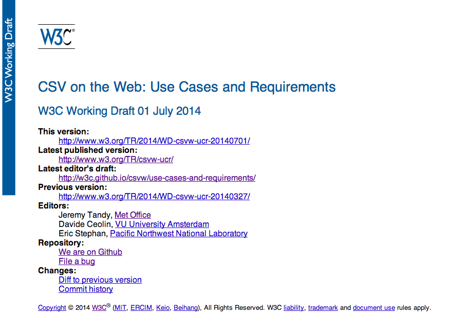
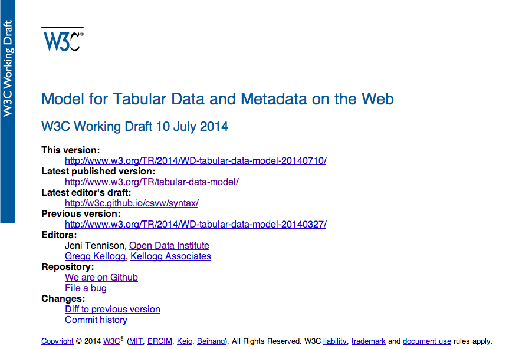
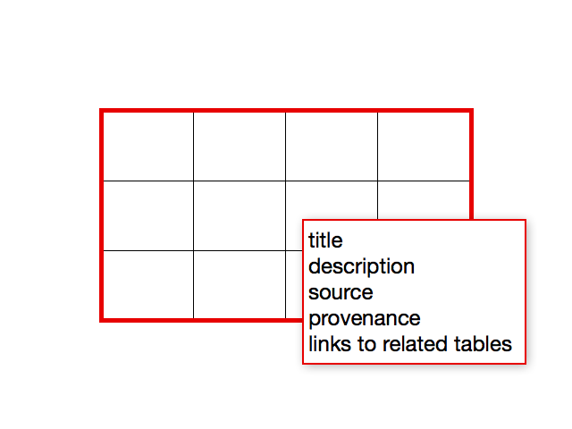
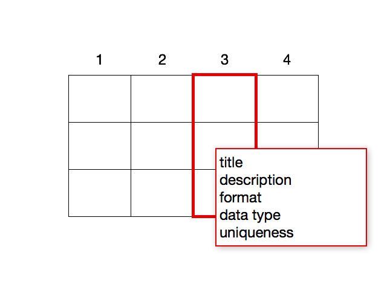
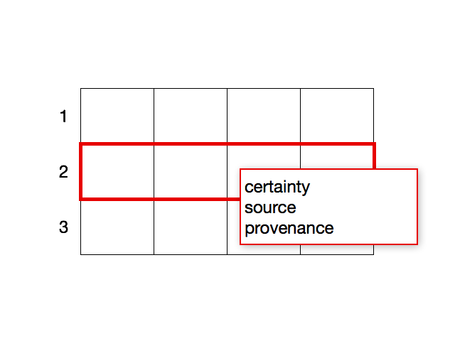
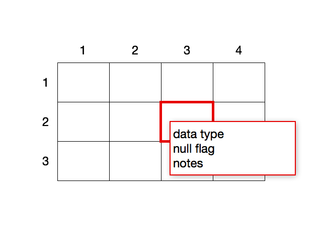
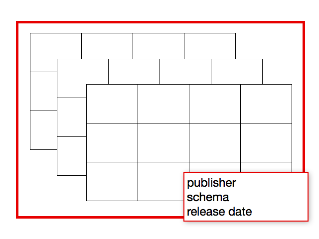
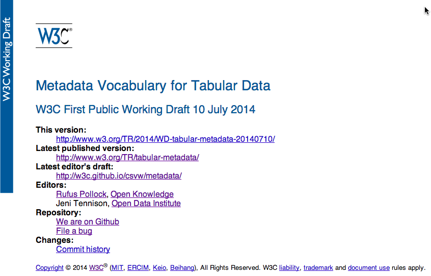

CSV on the Web
What's Happening in the W3C Working Group
Jeni Tennison · Open Data Institute
CSV on the Web W3C Working Group Co-chair
You can access the slides at http://theodi.github.io/presentations/2014-07-15-csv-wg.html.
Use arrows to navigate. Press 'f' for fullscreen. Press the Escape key to see all slides.
Standardising CSV?!?
CSV is Great
-
compact
- good for big and small data
-
understandable by normal people (with the right tools)
- unlike every other data format
-
pervasive
- developer tooling
- end user tooling
CSV is Crap
-
syntactic irregularities abound
- encoding / separator / header / escapes
-
because there is no standard
- RFC4180 is Informational & largely ignored
- so there's no validation
- so everyone working with it suffers
CSV is Crap
-
extremely inexpressive
- context / metadata / notes / relationships
-
so people use other mechanisms
- use Excel instead (multiple sheets)
- have multiple 'header' lines
- embed multiple tables in one CSV
- package CSV up with documentation
- so everyone working with it suffers
So What?
- >90% open data is tabular
- 2/3rds "CSV" files on data.gov.uk aren't machine readable
-
everyone can tailor a solution to read a CSV file
- but it doesn't scale
- and it locks you in
What if CSV...
- were a native browser format
- contained links
- could be linked to
what if CSV were a true web format?
Prior Art
DSPL: Dataset Publishing Language
Tabular Data Packages
Capital-S Standards
-
more likely to be accepted by governments
- improve what government publishes
-
more likely to get embedded in enterprise tooling
- improve what Excel produces
-
more likely to check all the boxes
- multiple stakeholders
W3C Working Group
Working Group
- started January 2014
- co-chaired by Jeni Tennison & Dan Brickley
- 28 members
- public mailing list at public-csv-wg@w3.org
- github repo at https://github.com/w3c/csvw
Charter
The mission of the CSV on the Web Working Group, part of the Data Activity, is to provide technologies whereby data dependent applications on the Web can provide higher interoperability when working with datasets using the CSV (Comma-Separated Values) or similar formats. As well as single CSV files, the group will define mechanisms for interpreting a set of CSVs as relational data. This will include the definition of a vocabulary for describing tables expressed as CSV and locatable on the web, and the relationships between them.
Syntax?
- out of scope of charter
- normative guidelines
-
close working with IETF
- creation of a Standards Track RFC
Use Cases & Requirements
Use Cases
- concrete examples including files
- some not CSV files
- some include mappings to other formats
- associated requirements
Requirements
- parsing requirements
-
application requirements
- validation
- mapping to JSON, XML & RDF
- non-functional requirements
-
data model requirements
- microsyntax & repeated properties
- multilingual content & bidirectionality
- mapping values to URLs
Model for Tabular Data & Metadata on the Web
Core Model: Table
Core Model: Column
Core Model: Row
Core Model: Cell
Annotated Model: Table
Annotated Model: Column
Annotated Model: Row
Annotated Model: Cell
Grouped Tables
Locating Metadata
- embedded in the CSV
- only example is headers
- package
- eg a zip file
LinkHTTP headerLink: <metadata.json>; rel="describedby"
- URL hacking
- eg look for
filename.csvm
- eg look for
Metadata Vocabulary for Tabular Data
Status
- early draft
- focus on single CSV file
- based on Tabular Data Package
- compatible with JSON-LD
Example
{
"@id": "site22580943-2013-dec.csv",
"title": "Weather observations for site 22580943 (Exeter Airport, UK)",
"modified": "2013-12-31",
"license": "https://www.nationalarchives.gov.uk/doc/open-government-licence/version/2/",
"schema": {
"columns": [{
"name": "air-temp",
"title": {
"en": "Air temperature (Cel)",
"fr": "La température d'air (C)"
},
"description": "Air temperature quantity value expressed in Celsius.",
"type": "double",
"required": true
}, {
...
}]
}
}
Metadata and Schemas
Annotations
- about tables, columns, rows & cells
- reusing vocabularies like Dublin Core / DCAT
- using link relations
- facilitates searches for data
Schemas
- common description for multiple CSVs
-
based on position not name of column
- supports human readable column names
- supports multilingual CSV schemas
Data Types & Formats
- based on XML Schema types
- string value vs semantic value
- constrain format of string values
- constrain magnitude of (semantic) values
- some concerns re implementation complexity
Mappings
Status
- early stages
- chartered to map to XML, JSON & RDF
- use cases somewhat lacking
- mapping into databases? R?
Current Approach
- mappings are complex
- looking at templating language
- describe default mapping as a template
<site/22580943/date-time/{datetime:/^(\d{4})-(\d{2})-(\d{2}T\d{2}):(\d{2}):(\d{2}Z)$/}>
a ssn:Observation ;
ssn:observationSamplingTime
[ time:inXSDDateTime "{datetime}"^^xsd:dateTime ] ;
ssn:observationResult [
a ssn:SensorOutput ;
def-op:airTemperature_C
[ qudt:numericValue "{air-temp}"^^xsd:double ] ;
def-op:dewPointTemperature_C
[ qudt:numericValue "{dew-point-temp}"^^xsd:double ]
] .
Help Us
- number of issues in the specs
- templating language?
- mapping to JSON?
- mapping to XML?
- loading into relational databases?
- loading into other tools eg R?
How?
- follow & contribute to mailing list
public-csv-wg@w3.org - raise issues & open pull requests
https://github.com/w3c/csvw - join the Working Group!
Questions?
Jeni Tennison · Open Data Institute
jeni@theodi.org @JeniTSlides at
http://theodi.github.io/presentations/2014-07-15-csv-wg.html